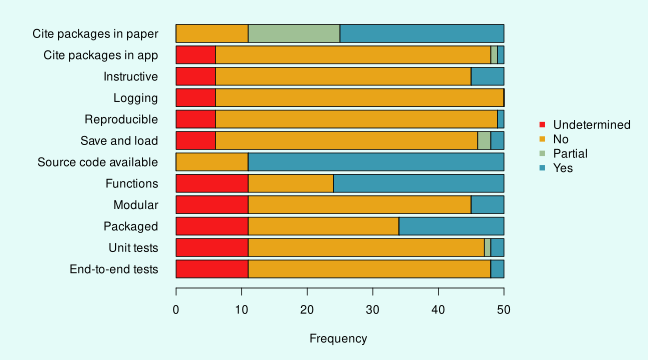
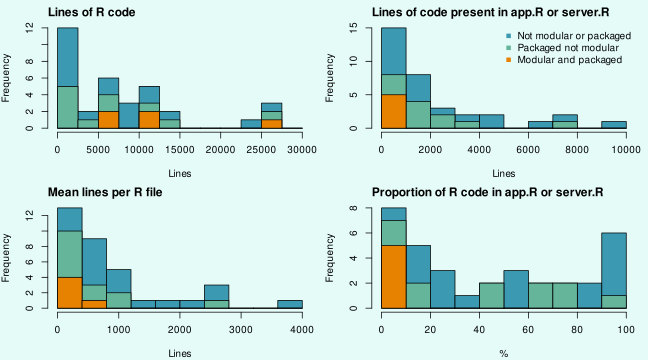
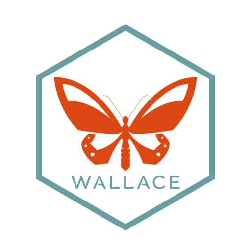
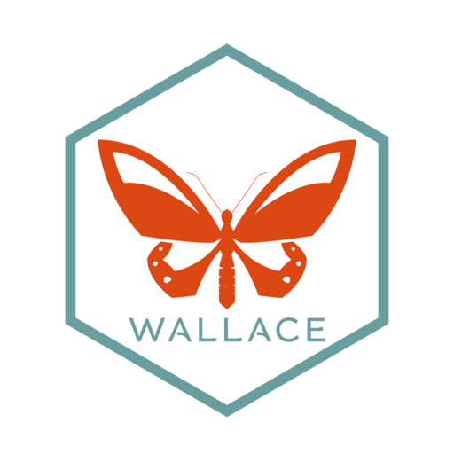

Shinyscholar
A template for creating reproducible Shiny applications
Simon Smart
2024-11-07
Overview
- What is Shiny?
- Best practices in Shiny development
- Use of Shiny in academia
- How Shinyscholar helps to avoid common problems
- Disagapp as an example app
About me
- Background in plant sciences and agricultural science
- Latecomer to R, starting in 2018
- Software developer in the Biostats group with Tim Lucas
Shiny enables the creation of applications in R
- R package developed by Posit/Rstudio, first released in 2012
- Framework for developing interactive applications using R
- Can run locally or online
- Make it much easier to share code with non R-users
Data flows through an analysis in discrete steps

- Adapted from Wickham (2022)
Shiny apps are becoming increasingly popular in academia
- The low barrier to entry makes Shiny popular
- Substantially increased apps as a method of dissemination
- “shiny app” or “shiny application” in Web of Science:

Creating analytical apps lowers the barrier of entry
- Provide guidance throughout a complex analysis
- Enable users without coding skills to access cutting-edge analyses
- Enable access for restricted users e.g. in NHS
MetaBayesDTA
- Cerullo et al. (2023) DOI: 10.1186/s12874-023-01910-y
- https://crsu.shinyapps.io/MetaBayesDTA/
Soil Benchmark
Kerus Cloud
Shiny apps consist of a user interface object (UI) and a server object
Data is transferred between the UI and server through the input and output
The ease of development provides advantages and disadvantages
- Simple apps can be created in an afternoon
- Academics rarely have training in software development
- What started simple can quickly snowball to become very complex
App design
- What features do we need?
- Generic
- Specific
- How should the code be structured?
- How do we make sure that it works?
What characteristics should academic apps have?
- Open
- Attributable
- Instructive
- Reproducible
- Reliable
- Maintainable
Reproducility futureproofs analyses made in an app
- Avoid the app being a black box
- As a tool for learning
- Allow users to edit and refine the analysis
- Increasingly required when findings are published
- If the app goes offline, the user can still get the same results
How should app code be structured?

How should app code be structured?
How should app code be structured?


Functions are central to R programming
- Separate normal R code from application logic
- Easier to debug
- Enable reuse of code
- Enable testing of the core functionality
Modules enable apps to be broken down into self-contained chunks
- Inputs and outputs for different parts are separated
- Simplifies naming of objects
- Easier to navigate files and maintain code
- But they need to be able to communicate…
Testing ensures code works as intended across platforms
- Unit tests check functions
- End-to-end tests check the app works
- Enable continuous integration
Packages ease development and distribution of code
- R packages parcel up code for distribution to others
- Many tools and processes rely on code being a package
- Enables installation in a single line
50 apps published in 2023 were surveyed to determine current practices
The size and structure of codebases varied substantially
Wallace is an app for modelling species distributions
Wallace is an app for modelling species distributions
- In development since 2015 with two major releases
- Feature-rich with many ideal characteristics:
- Error messages
- Logging
- Save and load
- Reproducible
- Cites packages used
- Kass et al. (2018) DOI: 10.1111/2041-210X.12945
- Kass et al. (2022) DOI: 10.1111/ecog.06547
Wallace provided the basis to create a template
- Lots of useful features that are difficult to implement
- Removed all the modules
- Adapted files so they could be edited programmatically
- Made various changes to add functionality
Shinyscholar helps create high quality analytical applications
- Creates an empty application with a regular structure
- Make it easier to follow software development best practices
- Developers can concentrate on creating functionality
Shinyscholar enforces a strict structure
- Analyses are split into components and modules
- Each module calls a function
- Each module is reproduced by a markdown chunk
- Data is passed between modules through
common
create_template() creates an empty app
| component | long_component | module | long_module | map | result | rmd | save | async |
|---|---|---|---|---|---|---|---|---|
| load | Load data | user | Upload your own data | TRUE | FALSE | TRUE | TRUE | TRUE |
| load | Load data | database | Query a database to obtain data | TRUE | FALSE | TRUE | TRUE | TRUE |
| plot | Plot data | histogram | Plot the data as a histogram | FALSE | TRUE | TRUE | TRUE | TRUE |
| plot | Plot data | scatter | Plot the data as a scatterplot | FALSE | TRUE | TRUE | TRUE | TRUE |
common_objects = c("raster", "histogram", "scatter")
shinyscholar::create_template(
path = file.path("~", "Documents"), name = "demo", author = "Simon E. H. Smart",
include_map = TRUE, include_table = TRUE, include_code = TRUE,
common_objects = common_objects, modules = modules, install = TRUE)
demo::run_demo()New apps can also be generated inside the shinyscholar app
Developers can then start developing modules
Each module has several files associated with it
- The component and module names are merged to create an identifier e.g.
load_user
- Function:
<id>_f.R - Module:
<id>.R - Markdown:
<id>.Rmd
- Guidance:
<id>.md - Configuration:
<id>.yml - Tests:
test-<id>.R

Markdown files can be merged to replicate the analysis
- When a module is used an object becomes
TRUE - Input values are stored and knitted into the markdown
- Each chunk of the markdown calls the same function as the module in the app
- The chunks for used modules are combined into one
.Rmdfile
Input values are copied into the markdown
To create a reproducible chunk
Boring, repetitive coding tasks are automated
save_and_load()andmetadata()automate these parts
Disaggregation regression enables high resolution disease mapping
There are several types of data to process
Modules are classified depending on their necessity

The same analysis reproduced
disagapp Session 2024-11-07
================
Please find below the R code history from your *disagapp* v1.0.0
session.
You can reproduce your session results by running this R Markdown file
in RStudio.
Each code block is called a “chunk”, and you can run them either
one-by-one or all at once by choosing an option in the “Run” menu at the
top-right corner of the “Source” pane in RStudio. The file can also be
rendered into an html file using `rmarkdown::render()` which will
contain all of the outputs alongside the code used to generate them.
For more detailed information see <http://rmarkdown.rstudio.com>.
### Package installation
disagapp uses the following R packages that must be installed and loaded
before starting.
```{r}
library(terra)
library(leaflet)
library(disaggregation)
library(disagapp)
#create empty list to store covariate data
covariates <- list()
#set a seed
set.seed(319)
```
The *disagapp* session code .Rmd file is composed of a chain of module
functions that are internal to *disagapp*. Each of these functions
corresponds to a single module that the user ran during the session. To
see the internal code for these module functions, click on the links in
the .Rmd file. Users are encouraged to write custom code in the .Rmd
directly to modify their analysis, and even modify the module function
code to further customize. To see the source code for any module
function, just type its name into the R console and press Return.
Your analyses are below.
------------------------------------------------------------------------
Load the selected example dataset
```{r}
dataset <- "mad"
switch(dataset,
"mad" = {
shpdf <- data.frame(datapath = list.files(system.file("extdata", "shapes", package="disagapp"), full.names = TRUE),
name = list.files(system.file("extdata", "shapes", package="disagapp")))
shape <- resp_shape(shpdf)
},
"nys" = {
shape <- SpatialEpi::NYleukemia_sf
},
"scot" = {
shape <- SpatialEpi::scotland_sf
shape$geometry <- shape$geometry * 1000
shape <- sf::st_set_crs(shape, 27700)
shape <- sf::st_transform(shape, crs = 4326)
}
)
```
Load accessibility data and add to covariates list
```{r}
access <- disagapp::cov_access(shape, "Travel Time to Cities (2015)")
covariates[["Travel Time to Cities (2015)"]] <- access
```
Download bioclim data and add to covariates list
```{r}
bioclim <- disagapp::cov_bioclim(shape, "MDG", c("Mean temperature", "Total precipitation"))
covariates <- append(covariates, bioclim)
```
Download land use data and add to covariates list
```{r}
land_use <- disagapp::cov_landuse(shape, 2019, c("BuiltUp", "Crops"))
covariates <- append(covariates, land_use)
```
Download population count data from Worldpop
```{r}
aggregation <- disagapp::agg_worldpop(shape, "MDG", "Constrained", "1km", 2020)
```
Build the spatial mesh
```{r}
mesh <- disaggregation::build_mesh(shape,
mesh_args = list(
convex = -0.01,
concave = -0.5,
resolution = 300,
max.edge = c(1.5, 3.1),
cutoff = 0.05,
offset = c(1.5, 3.1)))
```
Prepare the covariates and aggregation raster so that their extent and
resolution match, enabling them to be stacked into a single SpatRaster
```{r}
#temporarily add the aggregation raster to the covariates list
covariates$aggregation <- aggregation
#prepare the summary
covariate_summary <- prep_summary(covariates, remove = FALSE)
#show the table
DT::datatable(covariate_summary)
```
```{r}
covariates$aggregation <- NULL
covariates_prepared <- lapply(covariates, terra::resample, covariates[["BuiltUp land use"]])
#store and then remove the prepared aggregation raster
aggregation_prepared <- terra::resample(aggregation, covariates[["BuiltUp land use"]], method = "sum")
#convert the list of SpatRasters into a multi-layered SpatRaster
covariates_prepared <- terra::rast(covariates_prepared)
```
Scale the covariates and store the parameters for potential reuse
```{r}
scaled_covariate_output <- prep_scale(covariates_prepared)
covariates_prepared <- scaled_covariate_output[["covariates"]]
scaling_parameters <- scaled_covariate_output[["parameters"]]
```
Reduce resolution of covariates and aggregation raster
```{r}
covariates_prepared <- terra::aggregate(covariates_prepared, fact = 4, fun = "mean")
aggregation_prepared <- terra::aggregate(aggregation_prepared, fact = 4, fun = "sum")
```
Plot a correlation matrix of the prepared covariates
```{r}
correlation_matrix <- disagapp::prep_correlation(covariates_prepared)
corrplot::corrplot(correlation_matrix,
method = "circle",
type = "lower",
diag = FALSE)
```
Prepare the data for fitting the model and plot a summary.
```{r}
prepared_data <- disaggregation::prepare_data(polygon_shapefile = shape,
covariate_rasters = covariates_prepared,
aggregation_raster = aggregation_prepared,
id_var = "ID_2",
response_var = "inc",
na_action = TRUE,
make_mesh = FALSE)
prepared_data$mesh <- mesh
plot(prepared_data)
```
Fit the model
```{r}
# Create NULL priors if they have not been set
if (!exists("priors")) {
priors <- NULL
}
fitted_model <- disaggregation::disag_model(data = prepared_data,
priors = priors,
family = "poisson",
link = "log",
iterations = 100,
field = TRUE,
iid = TRUE
)
```
Generate predictions from the model
```{r}
prediction <- disaggregation::predict_model(fitted_model, predict_iid = TRUE)
plot(prediction$prediction)
prediction$cases <- prediction$prediction * aggregation_prepared
plot(prediction$cases)
if (!is.null(prediction$field)){
terra::crs(prediction$field) <- terra::crs(prepared_data$covariate_rasters[[1]])
prediction$field <- terra::mask(prediction$field, prepared_data$covariate_rasters[[1]])
plot(prediction$field)
}
if (!is.null(prediction$iid)){
plot(prediction$iid)
}
```Summary
- Shiny apps are easy to create and help disseminate methods
- Current software development practices in academic apps could be improved
- Shinyscholar helps create apps that are:
- Open, attributable, instructive, reproducible, reliable and maintainable
Github resources
- https://github.com/simon-smart88
- shinyscholar
- disagapp
- These slides
- Introduction to shiny workshop
Acknowledgments
- Wellcome
- Wallace developers
- Tim
- CRSU
 
